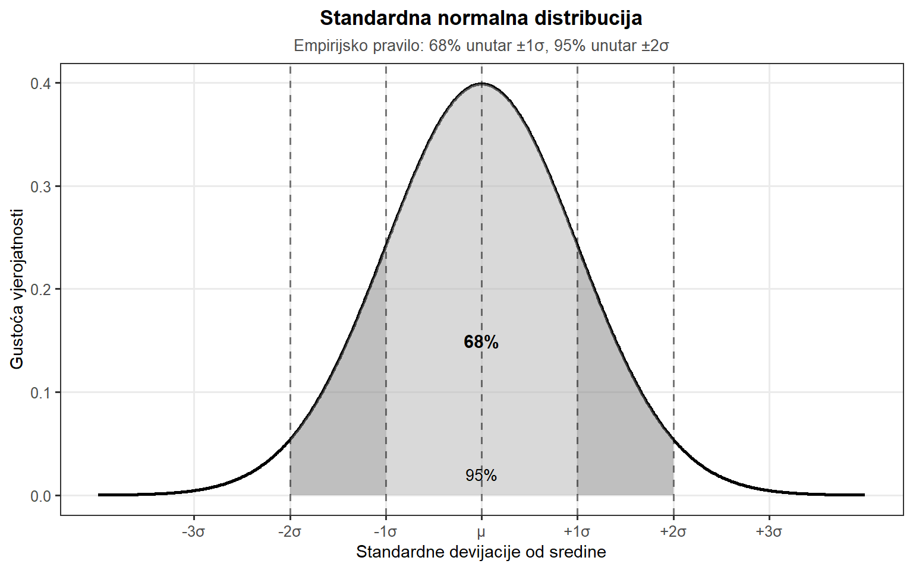
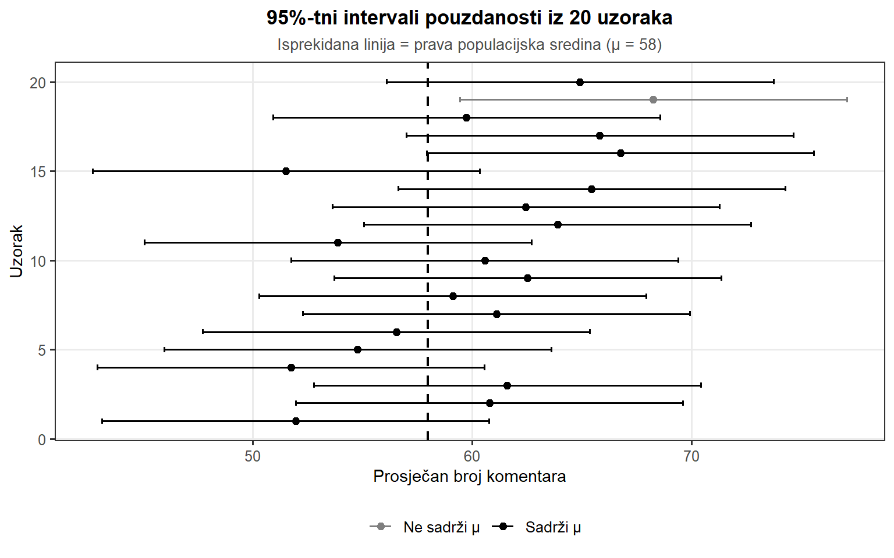

Osnove statistickog zakljucivanja
Osnove statističkog zaključivanja
Istraživač medija rijetko ima priliku analizirati cijelu populaciju koja ga zanima. Kada istražujemo percepciju kredibiliteta vijesti među hrvatskim građanima, ne možemo anketirati svih četiri milijuna odraslih osoba. Umjesto toga, prikupljamo uzorak – možda 500 ili 1000 ispitanika – i na temelju tog uzorka pokušavamo izvesti zaključke o cijeloj populaciji. Ova tranzicija od konkretnih podataka koje imamo prema općenitim zaključcima koje želimo predstavlja srž statističkog zaključivanja.
Statistička inferencija temelji se na fascinantnoj ideji: iako nikada nećemo znati točnu vrijednost populacijskog parametra (npr. pravu prosječnu gledanost svih televizijskih programa), možemo kvantificirati nesigurnost naše procjene i donositi racionalne odluke unatoč toj nesigurnosti. Zamislimo da provodimo anketu o povjerenju u medije među 500 nasumično odabranih hrvatskih građana. Prosječna ocjena povjerenja u našem uzorku iznosi 5.2 (na skali 1-10). Je li to dovoljno blizu pravoj prosječnoj ocjeni u cijeloj populaciji? Koliko bismo mogli pogriješiti? I ako HRT tvrdi da je prosječno povjerenje u njihov program 6.0, možemo li na temelju naših podataka zaključiti da pretjeruju?
Odgovori na ova pitanja zahtijevaju razumijevanje nekoliko ključnih koncepata: normalne distribucije, centralnog graničnog teorema, standardne pogreške i logike testiranja hipoteza. Ovi koncepti zajedno čine temelj inferencijalne statistike – grane statistike koja se bavi izvođenjem zaključaka o populaciji na temelju uzorka. Za razliku od deskriptivne statistike koja samo opisuje podatke koje imamo pred sobom, inferencijalna statistika omogućuje generalizaciju – prelazak od specifičnog (naš uzorak) prema općenitom (cijela populacija).
U kontekstu istraživanja masovne komunikacije, razumijevanje statističkog zaključivanja ima izuzetnu praktičnu važnost. Svaki put kada čitamo izvještaj o istraživanju javnog mnijenja, anketi o medijskim navikama ili studiji o učincima medijskih poruka, suočavamo se s rezultatima dobivenim iz uzoraka. Pitanja poput “Je li porast nepovjerenja u medije statistički značajan?” ili “Postoji li stvarna razlika u gledanosti između televizijskih kuća?” zahtijevaju poznavanje principa koje ćemo razmotriti u ovom poglavlju.
Od uzorka do populacije
Normalna distribucija
Kada crtamo histogram dnevne gledanosti televizijskih vijesti, vremena provedenog na društvenim mrežama ili ocjena kvalitete članaka, često primjećujemo da distribucija ima karakterističan oblik: podaci se grupiraju oko srednje vrijednosti, s postepenim opadanjem prema ekstremima s obje strane. Ovaj obrazac toliko često se pojavljuje u prirodi i društvenim znanostima da dobiva poseban status u statistici. Naziva se normalna distribucija ili “zvonasta krivulja” (engl. bell curve), i predstavlja najvažniju teorijsku distribuciju u statistici.
Zašto je normalna distribucija toliko česta? Odgovor leži u činjenici da mnoge varijable koje mjerimo rezultat su zbroja velikog broja malih, nezavisnih utjecaja. Primjerice, vrijeme koje čitatelj provede na članku ovisi o brojnim faktorima: interesu za temu, raspoloživom vremenu, duljini članka, kvaliteti pisanja, prisutnosti distraktora i tako dalje. Kada mnogo takvih malih faktora doprinosi konačnoj vrijednosti, rezultirajuća distribucija tendira biti normalna – fenomen koji formalizira centralni granični teorem.
Normalna distribucija je kontinuirana distribucija, što znači da može poprimiti bilo koju vrijednost unutar svog raspona, ne samo diskretne brojeve. Za razliku od diskretnih distribucija gdje možemo dobiti točno 3 ili 4 uspjeha (ali ne 3.5), varijable poput vremena čitanja ili gledanosti mogu poprimiti bilo koju vrijednost. Normalna distribucija potpuno je određena s dva parametra: sredinom \(\mu\) (čita se “mi”) i standardnom devijacijom \(\sigma\) (čita se “sigma”). Sredina određuje gdje je distribucija centrirana na brojčanoj osi, dok standardna devijacija određuje koliko je distribucija “raširena”.
Matematičku notaciju za normalnu distribuciju pišemo ovako: \(X \sim \text{Normal}(\mu, \sigma)\), što se čita “varijabla X slijedi normalnu distribuciju sa sredinom \(\mu\) i standardnom devijacijom \(\sigma\)”. Ako kažemo da prosječno vrijeme čitanja članaka na Index.hr slijedi normalnu distribuciju sa sredinom od 120 sekundi i standardnom devijacijom od 30 sekundi, zapisali bismo: \(X \sim \text{Normal}(120, 30)\). Ova notacija kompaktno sažima sve što trebamo znati o distribuciji varijable.
Poseban slučaj normalne distribucije je standardna normalna distribucija s \(\mu = 0\) i \(\sigma = 1\). Bilo koja normalna distribucija može se transformirati u standardnu normalnu pomoću z-transformacije: \(z = (X - \mu)/\sigma\). Ova transformacija “standardizira” podatke tako da možemo koristiti iste tablice vjerojatnosti neovisno o izvornim jedinicama mjerenja.
Neovisno o konkretnim vrijednostima sredine i standardne devijacije, sve normalne distribucije dijele važna svojstva. Empirijsko pravilo (također poznato kao pravilo 68-95-99.7) govori nam: približno 68% opservacija pada unutar jedne standardne devijacije od sredine (\(\mu \pm \sigma\)), približno 95% opservacija pada unutar dvije standardne devijacije (\(\mu \pm 2\sigma\)), i približno 99.7% opservacija pada unutar tri standardne devijacije (\(\mu \pm 3\sigma\)).
Za konkretni primjer, pretpostavimo da prosječno vrijeme čitanja članaka na Index.hr slijedi normalnu distribuciju s \(\mu = 120\) sekundi i \(\sigma = 30\) sekundi. Prema empirijskom pravilu, 68% čitatelja provodi između 90 i 150 sekundi (120 ± 30), 95% između 60 i 180 sekundi (120 ± 60), i gotovo svi (99.7%) između 30 i 210 sekundi (120 ± 90). Ovo pravilo omogućuje brzu procjenu normalnosti distribucije: ako su naši stvarni podaci vrlo daleko od ovih postotaka, možda distribucija nije normalna.
Za kontinuirane distribucije poput normalne, vjerojatnost ne pripisujemo pojedinačnim točkama već intervalima. Pitanje “kolika je vjerojatnost da čitatelj provede točno 120.0000 sekundi” nema smisla – odgovor je nula. Međutim, pitanje “kolika je vjerojatnost da čitatelj provede između 110 i 130 sekundi” ima jasan odgovor, i taj odgovor daje nam površina ispod krivulje između tih dviju točaka.
Centralni granični teorem
Postavimo sada fundamentalno pitanje: što se događa kada uzimamo uzorke iz populacije i izračunavamo prosjeke tih uzoraka? Zamislimo da ponavljamo anketiranje publike HRT-a. Prvi tjedan anketiramo 50 gledatelja i dobijemo prosječnu satisfakciju od 7.2 (na skali 1-10). Sljedeći tjedan ponovo anketiramo 50 različitih gledatelja i dobijemo 7.5. Treći tjedan dobijemo 6.9. Ako bismo ovaj proces ponavljali stotinama puta, što bismo vidjeli?
Distribucija svih tih prosječnih satisfakcija naziva se uzorkovna distribucija prosjeka (engl. sampling distribution of the mean), i ona ima zadivljujuća svojstva koja nam objašnjava centralni granični teorem (CGT), jedan od najvažnijih rezultata u teoriji vjerojatnosti. CGT je matematički temelj koji opravdava korištenje normalne distribucije u inferencijalnoj statistici, čak i kada izvorna populacijska distribucija nije normalna.
Razmotrimo konkretan primjer. Pretpostavimo da stvarna prosječna satisfakcija svih HRT gledatelja (populacijska sredina) iznosi \(\mu = 7.0\), sa standardnom devijacijom \(\sigma = 2.0\). Ako uzmemo uzorak od \(N = 50\) gledatelja i izračunamo prosječnu satisfakciju, gotovo sigurno nećemo dobiti točno 7.0. Možda dobijemo 7.3, ili 6.8, ili neku drugu vrijednost. Nadalje, ako ponovimo eksperiment s novim uzorkom od 50 ljudi, dobivamo drugu vrijednost. Svaki put kada uzorkujemo, dobivamo malo drugačiji prosjek zbog slučajne varijacije u tome koje osobe uđu u naš uzorak.
Centralni granični teorem kaže sljedeće: bez obzira kakav oblik ima originalna populacijska distribucija, uzorkovna distribucija prosjeka postaje sve normalnija kako se veličina uzorka povećava. Štoviše, CGT nam daje precizne formule za karakteristike ove distribucije. Ovo je izuzetno moćan rezultat jer nam omogućuje korištenje normalne distribucije za inferenciju čak i kada ne znamo (ili kada znamo da nije) normalna izvorna distribucija u populaciji.
Da bismo ilustrirali CGT, zamislimo da je distribucija satisfakcije u populaciji jako asimetrična – možda većina gledatelja daje visoke ocjene, ali postoji rep nezadovoljnih korisnika koji daju niske ocjene. Distribucija pojedinačnih ocjena nije normalna. Međutim, kada uzorkujemo 50 ljudi i izračunamo prosjek, taj prosjek “izglađuje” ekstremne vrijednosti. Ako ponovimo uzorkovanje tisuću puta, distribucija tih tisuću prosjeka bit će približno normalna, unatoč asimetriji izvorne distribucije.

CGT donosi tri fundamentalna rezultata o uzorkovnoj distribuciji prosjeka:
Prvo, sredina uzorkovne distribucije jednaka je populacijskoj sredini. Ako je prava prosječna satisfakcija \(\mu = 7.0\), tada je prosječna vrijednost svih mogućih prosječnih satisfakcija iz uzoraka također 7.0. Formalno: \(E[\bar{X}] = \mu\). Ovo znači da je prosječna satisfakcija iz uzorka nepristrani procjenitelj populacijske sredine – u prosjeku, “pogađa” pravu vrijednost.
Drugo, standardna devijacija uzorkovne distribucije (koja se naziva standardna pogreška) jednaka je:
\[\text{SE} = \frac{\sigma}{\sqrt{N}}\]
gdje je \(\sigma\) populacijska standardna devijacija, a \(N\) veličina uzorka. U našem primjeru s HRT-om, ako je \(\sigma = 2.0\) i \(N = 50\): \(\text{SE} = 2.0 / \sqrt{50} \approx 0.283\). Ova formula ima važne implikacije. Standardna pogreška se smanjuje s korijenom veličine uzorka, ne linearno. Da bismo prepolovili standardnu pogrešku, moramo učetverostručiti veličinu uzorka.
Treće, kako veličina uzorka raste, oblik uzorkovne distribucije sve više nalikuje normalnoj distribuciji, neovisno o obliku populacijske distribucije. Čak i ako je originalna distribucija satisfakcije asimetrična ili multimodalna, distribucija prosječnih satisfakcija iz uzoraka veličine 30 ili više bit će približno normalna.
Standardna pogreška
Standardna pogreška (SE) mjeri koliko tipično varira procjena prosjeka od uzorka do uzorka. Ovo se fundamentalno razlikuje od standardne devijacije, koja mjeri koliko tipično variraju pojedinačne opservacije. Razlika je ključna i često zbunjuje studente, stoga je vrijedi detaljno razjasniti.
Zamislimo da istražujemo prosječan broj komentara na člancima portala Večernji.hr. Standardna devijacija broja komentara po članku mogla bi biti \(SD = 45\) komentara – to nam govori da se članci međusobno jako razlikuju po angažmanu koji generiraju. Neki članci dobiju samo 5 komentara, drugi dobiju 150. Međutim, standardna pogreška prosječnog broja komentara iz uzorka od 100 članaka bila bi \(SE = 45/\sqrt{100} = 4.5\) komentara – prosjeci iz različitih uzoraka variraju daleko manje od pojedinačnih članaka.
Ova razlika proizlazi iz činjenice da prosjek “izglađuje” individualnu varijabilnost. Kada prosječimo 100 članaka, neki visoko komentirani članci kompenziraju one s malo komentara, rezultirajući prosjekom koji je relativno stabilan. Što je veći uzorak, to je prosjek stabilniji – ekstremne vrijednosti imaju manje utjecaja kada ih prosječimo s više “normalnih” vrijednosti.
Standardna pogreška ima ključnu ulogu u konstrukciji intervala pouzdanosti. Ako želimo konstruirati 95%-tni interval pouzdanosti za populacijski prosjek, koristimo formulu:
\[\bar{X} \pm 1.96 \times \text{SE}\]
Broj 1.96 dolazi iz normalne distribucije – to je z-vrijednost koja ostavlja 2.5% u svakom repu, odnosno 95% distribucije nalazi se unutar ±1.96 standardnih devijacija od sredine. Za naš primjer s Večernjim.hr, ako smo opazili prosječno 58 komentara sa SE = 4.5, 95%-tni interval pouzdanosti bio bi: \(58 \pm 1.96 \times 4.5 = 58 \pm 8.82\), odnosno od 49.18 do 66.82 komentara.
Interpretacija intervala pouzdanosti zahtijeva pažnju. Pravilna interpretacija glasi: ako bismo ponovili uzorkovanje mnogo puta i svaki put konstruirali interval pouzdanosti na ovaj način, 95% tih intervala sadržavalo bi pravu populacijsku sredinu. Važno je primijetiti da ne možemo reći da postoji 95% vjerojatnosti da se prava sredina nalazi u našem konkretnom intervalu – prava sredina je fiksna vrijednost (samo nam nepoznata), a naš interval ili je sadrži ili ne sadrži. Vjerojatnost se odnosi na postupak konstrukcije intervala, ne na specifični interval.
Za istraživača masovne komunikacije, intervali pouzdanosti pružaju korisnu informaciju o preciznosti procjene. Interval pouzdanosti od 49 do 67 komentara govori nešto drugačije od intervala od 55 do 61 komentara – prvi sugerira veliku nesigurnost, dok drugi ukazuje na prilično preciznu procjenu. Širina intervala pouzdanosti izravno ovisi o standardnoj pogrešci, koja pak ovisi o veličini uzorka. Veći uzorci daju uže intervale i precizniju procjenu.

Inferencijalna statistika
Logika testiranja hipoteza
Zamislimo da portal Index.hr tvrdi da njihovi članci prosječno generiraju 50 komentara. Istraživač koji istražuje angažman korisnika odluči provjeriti ovu tvrdnju, pa nasumično odabere 100 članaka i otkrije da je prosječan broj komentara 58, sa standardnom devijacijom od 25. Trebamo li zaključiti da Index.hr potcjenjuje svoj angažman, ili je razlika od 8 komentara jednostavno slučajno odstupanje koje može nastati zbog uzorkovanja?
Ovo je tipična situacija za testiranje hipoteza – sistematičan pristup donošenju statističkih odluka. Testiranje hipoteza pruža okvir za razlikovanje između stvarnih efekata i slučajne varijacije, omogućujući istraživačima da donose objektivne zaključke na temelju podataka.
Prije nego što možemo testirati bilo što, moramo jasno razlikovati dva tipa hipoteza. Istraživačka hipoteza je znanstvena tvrdnja o svijetu koja nas zanima, npr. “angažman korisnika portala razlikuje se od službenih procjena” ili “senzacionalni naslovi povećavaju broj klikova”. Ovo su tvrdnje o psihološkim ili komunikološkim konstruktima – o ponašanju ljudi, o učinku medijskog sadržaja, o prirodi komunikacijskih fenomena.
Međutim, istraživačke hipoteze su često nejasne i teško mjerljive. Što točno znači “podcjenjuje angažman”? Za koliko? U kojim situacijama? Da bismo mogli testirati hipotezu, moramo je prevesti u preciznu matematičku tvrdnju – statističku hipotezu: “prava prosječna vrijednost komentara po članku (\(\mu\)) razlikuje se od 50”, što matematički zapisujemo kao \(\mu \neq 50\). Ključno je razumjeti da statistički test testira statističku hipotezu, ne istraživačku. Ako je naša studija loše dizajnirana, možemo dobiti statistički značajan rezultat koji ne govori ništa istinito o našoj istraživačkoj hipotezi.
Kada započinjemo statistički test, ne krećemo od hipoteze u koju vjerujemo. Umjesto toga, konstruiramo nultu hipotezu (\(H_0\)) koja predstavlja ono što ne želimo biti istina, i zatim pokušavamo pokazati da je ona lažna:
\[H_0: \mu = 50\]
Nulta hipoteza tvrdi da je Index.hr u pravu – prosječan broj komentara doista jest 50. Ona predstavlja status quo, tvrdnju da nema efekta, da nema razlike, da nema veze između varijabli. Alternativna hipoteza (\(H_1\)) predstavlja ono što sumnjamo da je istina:
\[H_1: \mu \neq 50\]
Ovaj pristup možda djeluje kontraintuitivno – zašto bismo postavljali hipotezu u koju ne vjerujemo? Odgovor leži u logici dokazivanja. Lakše je opovrgnuti tvrdnju nego je dokazati. Ako tvrdim da “svi labudovi su bijeli”, potreban mi je samo jedan crni labud da opovrgnem tu tvrdnju. S druge strane, koliko god bijelih labudova vidim, nikada ne mogu biti potpuno siguran da ne postoji crni labud negdje kojeg nisam vidio.
Najbolji način da razumijemo logiku testiranja hipoteza jest analogija s kaznenim suđenjem. Nulta hipoteza je “optuženik”, istraživač je tužitelj, a statistički test je sudac. Kao i u kaznenom suđenju, postoji presumpcija nevinosti: nulta hipoteza smatra se istinitom sve dok ne možemo dokazati “izvan razumne sumnje” da je lažna. Teret dokaza je na istraživaču koji želi odbaciti nultu hipotezu. Pravila igre dizajnirana su da štite nultu hipotezu – ako je ona zapravo istinita, šansa za lažnu osudu garantirano je niska (obično ispod 5%).
Testna statistika i kritična regija
Da bismo proveli test, trebamo testnu statistiku – broj koji računamo iz podataka i koji nam pomaže razlikovati između nulte i alternativne hipoteze. Moramo znati kako se ta statistika ponaša ako je nulta hipoteza istinita. Za naš Index.hr primjer, standardna pogreška je \(SE = 25/\sqrt{100} = 2.5\). Prema nultoj hipotezi, očekujemo da će prosječan broj komentara iz uzorka biti negdje oko 50, s tipičnim odstupanjem od 2.5. Naša opažena vrijednost od 58 je \((58 - 50) / 2.5 = 3.2\) standardne pogreške iznad očekivane vrijednosti.

Da bismo odgovorili je li naš rezultat dovoljno ekstreman, moramo definirati kritičnu regiju – skup vrijednosti testne statistike koji bi nas naveo na odbacivanje nulte hipoteze. Koristimo razinu značajnosti \(\alpha\), koja predstavlja maksimalnu stopu pogreške koju smo spremni tolerirati. Konvencija u znanosti je obično \(\alpha = 0.05\), što znači da smo spremni prihvatiti 5% šanse da ćemo pogrešno odbaciti istinitu nultu hipotezu. Za normalnu distribuciju s dvosmjernim testom, kritične vrijednosti su ±1.96 standardnih pogrešaka od sredine.
Naša opažena vrijednost od 58 komentara pada u kritičnu regiju (58 > 54.9), stoga odbacujemo nultu hipotezu. Zaključujemo da imamo statističke dokaze da prosječan broj komentara nije 50.
P-vrijednost
P-vrijednost može se definirati na dva komplementarna načina. Prvi način (Neymanovski pristup): p-vrijednost je najmanji nivo značajnosti \(\alpha\) koji biste morali biti spremni tolerirati da biste mogli odbaciti nultu hipotezu. Ako je p-vrijednost 0.03, možete odbaciti \(H_0\) ako ste spremni tolerirati 3% stopu pogreške, ali ne možete je odbaciti ako zahtijevate 1% stopu pogreške.
Drugi način (Fisherov pristup): p-vrijednost je vjerojatnost dobivanja rezultata jednako ili više ekstremnih od onih koje smo opazili, pod pretpostavkom da je nulta hipoteza istinita. Ovaj pristup tretira p-vrijednost kao mjeru “iznenađenja” – što je p-vrijednost niža, to su naši podaci “iznenađujući” ako je nulta hipoteza istinita.
Za naš Index.hr primjer s z-vrijednošću od 3.2, p-vrijednost iznosi približno 0.0014 (ili 0.14%). Interpretacija: ako bi prosječan broj komentara zaista bio 50, tada bismo u samo 0.14% slučajeva dobili prosjek koji je toliko ili više udaljen od 50 kao što je naš opaženi prosjek od 58. Budući da je ova vjerojatnost ispod uobičajenog praga od 5%, odbacujemo nultu hipotezu.
P-vrijednost je možda najpogrešnije shvaćen koncept u statistici. Ovo nije pretjerivanje – brojna istraživanja pokazuju da čak i profesionalni istraživači često pogrešno interpretiraju p-vrijednosti. P-vrijednost nije vjerojatnost da je nulta hipoteza istinita – frekventistički pristup statistici ne dopušta pripisivanje vjerojatnosti hipotezama, one su ili istinite ili nisu. P-vrijednost nije vjerojatnost da su rezultati nastali slučajno – izračun pretpostavlja da je \(H_0\) istinita, ne mjeri vjerojatnost te pretpostavke. P-vrijednost nije vjerojatnost da ste napravili pogrešku odbacujući \(H_0\) – ta vjerojatnost bila bi \(\alpha\), ne p-vrijednost. P-vrijednost nije mjera veličine efekta ili praktične važnosti – može biti vrlo mala za trivijalne efekte ako je uzorak dovoljno velik.
Pravilna interpretacija p-vrijednosti može se izraziti na nekoliko načina: “Ako bi nulta hipoteza bila istinita, podaci kao naši ili ekstremiji javljali bi se u 0.14% slučajeva”, ili “Trebali bismo biti spremni tolerirati stopu pogreške tipa I od najmanje 0.14% da bismo odbacili \(H_0\)”, ili jednostavno “Podaci pružaju jake dokaze protiv nulte hipoteze.”
| Notacija | Značenje | Razina značajnosti |
|---|---|---|
| \(p > 0.05\) ili n.s. | Nije značajno | Zadržavamo \(H_0\) |
| \(p < 0.05\) (*) | Značajno na razini 5% | Odbacujemo \(H_0\) |
| \(p < 0.01\) (**) | Značajno na razini 1% | Odbacujemo \(H_0\) |
| \(p < 0.001\) (***) | Vrlo značajno | Odbacujemo \(H_0\) |
Ključno je razumjeti da statistički značajan ne znači važan ili praktično relevantan. Ove dvije stvari su potpuno različite i njihovo miješanje vodi do ozbiljnih pogrešaka u interpretaciji rezultata. S dovoljno velikim uzorkom, čak i minijaturni efekti postaju statistički značajni. Zamislimo da analiziramo milijun članaka i otkrijemo da prosječan broj komentara nije 50.0 već 50.2. P-vrijednost može biti \(p < 0.001\), ali je razlika od 0.2 komentara praktično beznačajna – nijedna urednička odluka ne bi se trebala temeljiti na tako trivijalnoj razlici.
Praktična značajnost se ocjenjuje kroz veličinu efekta i kontekst – razlika između 50 i 58 komentara može biti praktično važna jer predstavlja 16% povećanje angažmana. Veličina efekta mjeri se standardiziranim mjerama poput Cohenov d (za razlike između skupina) ili Pearsonov r (za korelacije). Cohen je predložio konvencionalne pragove: mali efekt (d ≈ 0.2), srednji efekt (d ≈ 0.5), veliki efekt (d ≈ 0.8). Međutim, ovi pragovi su orijentacijski – što je “velik” efekt ovisi o kontekstu istraživanja.
Za istraživača masovne komunikacije, razlikovanje statističke i praktične značajnosti ima izravne implikacije. Studija može pokazati da novi format naslova “statistički značajno” povećava broj klikova s p < 0.001, ali ako je povećanje samo 0.5%, vjerojatno nije vrijedno implementacije. S druge strane, studija s p = 0.06 koja pokazuje povećanje od 15% možda zaslužuje daljnje istraživanje, čak i ako nije prešla konvencionalni prag značajnosti.
Vrste pogrešaka
Statistički testovi nisu savršeni. Čak i kada sve radimo ispravno – kada pravilno provedemo uzorkovanje, ispravno izračunamo testnu statistiku i korektno interpretiramo rezultate – postoji mogućnost pogreške. Svijet je kaotičan, podaci su bučni, i ponekad jednostavno imamo lošu sreću. Razumijevanje vrsta pogrešaka koje možemo napraviti, i kako ih kontrolirati, ključno je za kompetentno korištenje statističkih testova. Postoje dva tipa pogrešaka koje možemo napraviti:
Pogreška tipa I (lažno pozitivan) nastaje kada odbacimo istinitu nultu hipotezu. U kontekstu našeg Index.hr primjera, to bi značilo zaključiti da prosječan broj komentara nije 50 kada zapravo jest. U kriminalnoj analogiji, to je osuda nevinog čovjeka. Ova pogreška je ozbiljna jer nas navodi da vjerujemo u efekt koji zapravo ne postoji, što može voditi do pogrešnih teorijskih zaključaka, beskorisnih praktičnih intervencija i gubitka resursa na istraživanje lažnih tragova.
Vjerojatnost pogreške tipa I označava se s \(\alpha\) i ona je razina značajnosti testa. Kada postavljamo \(\alpha = 0.05\), eksplicitno kažemo: “Spreman sam prihvatiti da ću u 5% slučajeva pogrešno odbaciti istinitu nultu hipotezu.” Ovo je razlog zašto su konvencionalni pragovi (0.05, 0.01, 0.001) tako važni – oni predstavljaju društveno dogovorene nivoe prihvatljivog rizika. Valja napomenuti da je \(\alpha\) razina koju mi biramo prije provedbe testa. Ako smo konzervativniji i želimo biti sigurniji prije odbacivanja \(H_0\), možemo postaviti \(\alpha = 0.01\) ili čak \(\alpha = 0.001\).
Pogreška tipa II (lažno negativan) nastaje kada zadržimo lažnu nultu hipotezu. To bi značilo zaključiti da prosječan broj komentara jest 50 kada zapravo nije. U kriminalnoj analogiji, to je oslobađanje krivca. Ova pogreška je također ozbiljna jer nas sprječava da otkrijemo stvarne efekte, što može voditi do propuštenih znanstvenih otkrića i nepravednog odbacivanja potencijalno korisnih teorija.
Vjerojatnost ove pogreške označava se s \(\beta\). Za razliku od pogreške tipa I, ne možemo direktno postaviti \(\beta\) na određenu vrijednost. Umjesto toga, \(\beta\) ovisi o nekoliko faktora. Veličina stvarnog efekta: što je stvarni efekt veći, to je lakše detektirati i manja je vjerojatnost da ćemo ga propustiti. Ako je prava prosječna vrijednost komentara 80 umjesto 58, bit će nam puno lakše odbaciti nultu hipotezu da je 50. Veličina uzorka: veći uzorak znači manju standardnu pogrešku, što omogućuje preciznije procjene i lakše otkrivanje efekata. Varijabilnost podataka: ako su podaci vrlo varijabilni, teže je razlikovati signal od šuma. Razina \(\alpha\): stroža \(\alpha\) (npr. 0.01 umjesto 0.05) povećava \(\beta\) – ako smo stroži prema pogrešci tipa I, automatski postajemo tolerantniji prema pogrešci tipa II.

Moć testa
Komplementarno pojmu pogreške tipa II, moć testa definira se kao: \(\text{Moć} = 1 - \beta\). Moć je vjerojatnost da ćemo ispravno odbaciti lažnu nultu hipotezu. “Moćan” test je onaj koji ima veliku vjerojatnost detektirati efekt kada efekt doista postoji. Drugim riječima, moć je osjetljivost testa – njegova sposobnost da “uhvati” stvarne efekte.
Moć testa ovisi o istim faktorima kao i \(\beta\), ali u suprotnom smjeru: veći stvarni efekt → veća moć (veće efekte lakše je detektirati), veći uzorak → veća moć (preciznije procjene omogućuju finiju diskriminaciju), manja varijabilnost → veća moć (manje šuma olakšava otkrivanje signala), blaža \(\alpha\) (npr. 0.05 umjesto 0.01) → veća moć (manje strogi kriteriji olakšavaju odbacivanje \(H_0\)).
Konvencionalno, istraživači nastoje dizajnirati studije koje imaju moć od najmanje 0.80 (80%). To znači da ako postoji pravi efekt, imamo 80% šanse da ćemo ga detektirati. Ovo nije proizvoljan broj – odražava kompromis između želje da otkrijemo stvarne efekte i praktičnih ograničenja veličine uzorka i resursa.
Prije provedbe studije, istraživači mogu koristiti analizu moći da odrede koliki uzorak im treba za postizanje željene moći. Analiza moći zahtijeva specifikaciju očekivane veličine efekta, željene razine moći (obično 0.80) i razine značajnosti (obično 0.05). Na temelju ovih parametara, može se izračunati minimalna potrebna veličina uzorka.
Analiza moći ima značajne praktične implikacije za planiranje istraživanja. Studija s nedovoljnom moći – recimo, samo 40% – zapravo je gubitak resursa. Čak i ako postoji pravi efekt, vjerojatnije je da ga nećemo otkriti nego da hoćemo. Rezultat takve studije, ako ne pronađe značajan efekt, ne pruža nikakvu korisnu informaciju – ne znamo je li efekt zaista ne postoji ili jednostavno nismo imali dovoljno moći da ga detektiramo.
S druge strane, studija s prekomjerno velikom moći – recimo, 99% – može biti neefikasna jer koristi više resursa nego što je potrebno. Ako bismo mogli postići dovoljnu preciznost s manjim uzorkom, dodatni ispitanici predstavljaju nepotreban trošak. Optimalno planiranje balansira između ovih ekstrema.

Možemo sažeti sve moguće ishode testiranja hipoteza u tablicu:
| \(H_0\) je zapravo istinita | \(H_0\) je zapravo lažna | |
|---|---|---|
| Zadržimo \(H_0\) | ✓ Ispravna odluka (\(1-\alpha\)) | ✗ Pogreška tipa II (\(\beta\)) |
| Odbacimo \(H_0\) | ✗ Pogreška tipa I (\(\alpha\)) | ✓ Ispravna odluka (Moć) |
Ova tablica pokazuje fundamentalnu napetost u testiranju hipoteza: ne možemo istovremeno minimizirati obje vrste pogrešaka uz fiksnu veličinu uzorka. Ako smanjimo \(\alpha\) (budemo stroži), automatski povećavamo \(\beta\) (postaje nam teže odbaciti lažnu \(H_0\)). Jedini način da smanjimo obje jest povećati veličinu uzorka. Ova napetost odražava fundamentalnu nesigurnost statističkog zaključivanja – nikada ne možemo biti potpuno sigurni u svoje zaključke.
Praktične implikacije ove tablice su značajne za planiranje istraživanja. Prije provedbe studije, istraživač mora donijeti eksplicitnu odluku o tome koliki rizik pogreške tipa I je spreman tolerirati (odabir \(\alpha\)) i koliku moć želi postići (što određuje potrebnu veličinu uzorka). Ove odluke trebaju biti donesene unaprijed, prije prikupljanja podataka, kako bi se izbjeglo prilagođavanje analize rezultatima – praksa poznata kao “p-hacking” ili “lovljenje značajnosti”.
Razumijevanje vrsta pogrešaka također pomaže u interpretaciji literature. Kada čitamo da studija “nije pronašla značajnu razliku”, moramo se pitati kakvu je moć imala ta studija. Ako je moć bila niska (npr. 40%), neuspjeh da se pronađe efekt ne govori nam puno – možda efekt postoji, ali studija jednostavno nije bila dovoljno osjetljiva da ga detektira. S druge strane, studija s visokom moći (npr. 90%) koja ne pronađe efekt pruža mnogo jače dokaze da efekt doista ne postoji ili je vrlo mali.
Sažetak poglavlja
Statistički zaključak omogućuje prelazak od konkretnih podataka iz uzorka do općenitih zaključaka o populaciji. Ovladavanje ovim konceptima nužan je preduvjet za kompetentnu primjenu statističkih testova u istraživanju masovne komunikacije. Koncepti koje smo obradili u ovom poglavlju čine temelj svih naprednih statističkih metoda koje ćemo koristiti u analizi komunikoloških podataka.
Normalna distribucija je teorijska distribucija određena sredinom (\(\mu\)) i standardnom devijacijom (\(\sigma\)). Njen karakterističan zvonast oblik pojavljuje se svugdje u prirodi i društvenim znanostima jer mnoge varijable nastaju kao zbroj velikog broja malih, nezavisnih utjecaja. Empirijsko pravilo govori da 68% podataka pada unutar ±1σ, 95% unutar ±2σ, i 99.7% unutar ±3σ od sredine. Za kontinuirane distribucije, vjerojatnosti se računaju kao površine ispod krivulje. Standardna normalna distribucija (μ = 0, σ = 1) služi kao referentna točka za sve normalne distribucije putem z-transformacije.
Centralni granični teorem objašnjava zašto prosjeci uzoraka imaju predvidljivo ponašanje, neovisno o obliku izvorne populacijske distribucije: uzorkovna distribucija prosjeka postaje normalna kako N raste (obično je N ≥ 30 dovoljno), sredina uzorkovne distribucije jednaka je populacijskoj sredini (\(E[\bar{X}] = \mu\)), a standardna pogreška je \(SE = \sigma/\sqrt{N}\). CGT je matematički temelj koji opravdava korištenje normalne distribucije u inferencijalnoj statistici.
Standardna pogreška mjeri nesigurnost procjene prosjeka – koliko tipično varira procjena od uzorka do uzorka. Fundamentalno se razlikuje od standardne devijacije koja mjeri varijabilnost pojedinačnih opservacija. Standardna pogreška smanjuje se s korijenom veličine uzorka, što znači da preciznost procjene raste sporije od rasta uzorka. Koristi se za konstrukciju intervala pouzdanosti: \(\bar{X} \pm 1.96 \times SE\) za 95%-tni interval. Intervali pouzdanosti kvantificiraju nesigurnost procjene i pružaju korisnu informaciju o preciznosti rezultata.
Testiranje hipoteza je sistematičan okvir za statističke odluke koji slijedi logiku sličnu kaznenom suđenju:
- Nulta hipoteza (\(H_0\)) predstavlja status quo i presumira se istinitom dok se ne dokaže suprotno
- Alternativna hipoteza (\(H_1\)) predstavlja ono što želimo pokazati – tvrdnju o efektu, razlici ili vezi
- Testna statistika mjeri odstupanje podataka od očekivanja pod \(H_0\)
- Kritična regija definira vrijednosti koje vode do odbacivanja \(H_0\), a određuje se pomoću razine značajnosti \(\alpha\)
P-vrijednost je vjerojatnost dobivanja podataka ekstremnih kao naši ili ekstremijih, pod pretpostavkom da je \(H_0\) istinita. P-vrijednost nije vjerojatnost da je \(H_0\) istinita – ta interpretacija je česta pogreška koja proizlazi iz nerazumijevanja frekventističke statistike. Konvencije: \(p < 0.05\) (značajno), \(p < 0.01\) (vrlo značajno), \(p < 0.001\) (izrazito značajno). Statistička značajnost ne implicira praktičnu važnost – mala p-vrijednost uz trivijalan efekt nije informativna.
Vrste pogrešaka su neizbježne u statističkom zaključivanju i moraju se razumjeti za pravilnu interpretaciju rezultata:
- Pogreška tipa I (\(\alpha\)): odbacivanje istinite \(H_0\) (lažno pozitivan) – kontroliramo direktno kroz razinu značajnosti
- Pogreška tipa II (\(\beta\)): zadržavanje lažne \(H_0\) (lažno negativan) – ovisi o veličini efekta, uzorka i varijabilnosti
- Moć (\(1-\beta\)): vjerojatnost ispravnog odbacivanja lažne \(H_0\) – cilj je minimalno 80%
- Ne možemo istovremeno minimizirati obje vrste pogrešaka uz fiksnu veličinu uzorka
Pri izvještavanju rezultata uvijek treba navesti p-vrijednost, veličinu efekta i interval pouzdanosti. Analiza moći treba biti standardni dio planiranja istraživanja kako bi se osigurala dovoljna osjetljivost za detekciju očekivanih efekata. Neuspjeh odbacivanja nulte hipoteze nije isto što i dokaz da efekt ne postoji – uvijek treba razmotriti moć testa prije zaključivanja o odsutnosti efekta.